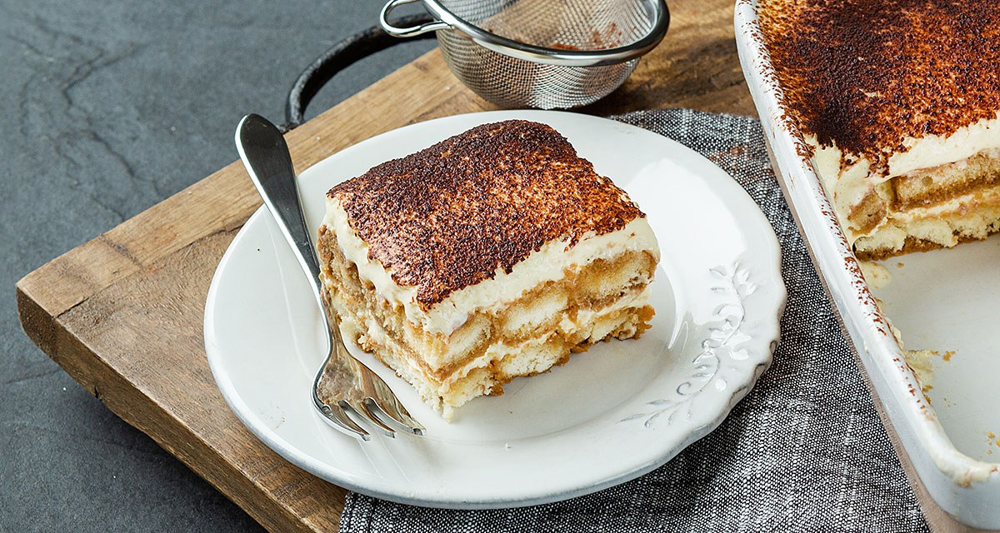

Tiramisu met koffie

Ingredienten
- 500g mascarpone
- 150g griessuiker
- 2 pakjes boudoirkoekjes
- 40ml amaretto
- 3 eieren
- 2 zakjes vanillesuiker
- 3 kopjes sterke koffie
- poedersuiker
- cacaopoeder
Bereiding
- Splits de eieren.
- Meng de dooiers met de mascarpone en de fijne suiker.
-
Klop het eiwit stijf samen met de vanillesuiker. Spatel het door de
mascarpone.
- Meng de koffie met de amaretto
- Dompel er de helft van de koekjes in en schik ze in een schaal.
-
Bestrijk met de helft van de mascarponecrème en bestrooi met
cacaopoeder.
-
Leg daarop de rest van de koekjes en bestrijk met de rest van de crème.
Eindig met cacaopoeder en poedersuiker.
- Zet 1 nacht in de koelkast.